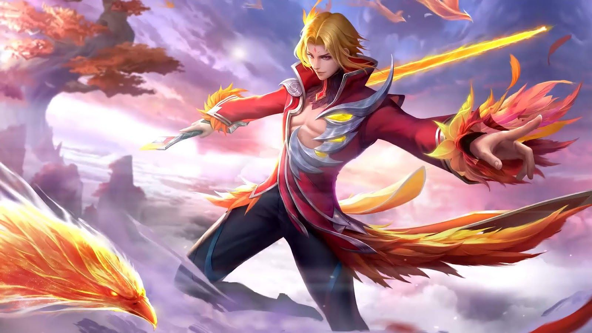

|  | |
|
Линг
|
|
|
Линг - герой класса убийца. Его особенностю является огромный урон, высокая мобильность и способность перемещаться по стенам.
|
|
"Я убью того,кого захочу убить!"
-Линг |
 |
Дата выхода: - 3 ноября 2019 года |
|
| История героя: | |
| Когда-то Линг жил, вместе с Зилонгом, во дворце Великого Дракона. Их общей мечтой было стать приемником Дракона. Хоть талант Линга и был больше чем у Зилонга, Дракон все же выбрал его своим приемником. Он покинул Тайную землю с позором, а захватившая его ненависть и стремление к власти, заставило фанатично тренироваться, чтобы вернуться и отомстить за свой позор. Так он стал лучшим убийцей фракции убийц «Зяблик» и получил новое имя — Синий Зяблик. Однажды он встретил предателя с Тайных земель, который был изгнан. Черный дракон рассказал ему о своем плане месте. Линг принял такое предложение. Прорвавшись во владения Великого Дракона. Он ждал своего противника, пока в центре зала не появился Зилонг с копьем Дракона в руке. Сойдясь в схватке, Линг понял, что Зилонг усердно тренировался и стал во много раз сильнее. Зилонг решил стать побежденным, что бы успокоить сердце своего старого друга. Линг опустил мечи, понимая, что другого шанса на честную схватку не будет. Наконец он осознал, что его решение было простой обидой. | |
Слабые и сильные стороны: Слабые:
Cильные:
Сборка героя:
Эмблемы
Выбор линии:
Так, как Линг имеет энергию, в начале игры он отправляется за синим баффом
Описание навыков:
~Синий зяблик
Пассивное: Ходок в облаках
Линг настолько легок, что может передвигаться по стенам в погоне за врагами. Отдыхая на стене, Линг востанавливает 4 очка Лёгкости в секунду. Каждый раз, нанося урон по врагам, герой востанавливает 5 очков Легкости.
Навык Легкости наделяет Линга 20% шансом на критически удар, но снижает критический урона на 40%.

1 Навык: Повадки Зяблика
Линг прыгает к выбранной стене, входя в состояние маскировки , находясь на стене, он востанавливает очки легкости намного быстрее. Если Линг получает урон, он выходит из состояния маскировки. Эффекты контроля сбрасывают Линга со стены. Повторное использование этого навыка: Линг перепрыгивает с одной стены на другую, обновляя эффект маскировки.

2 Навык: Дерзкий клинок
Линг делает рывок в выбраном направлении атакуя врагов по пути нанося 135(+65% от общей физ. Атаки) физического урона.
Если герой исспользует навык, находясь на стене, он прыгнет в выбранную точку на земле нанося 135(+65% от общей физ. Атаки) урона врагам в небольшой области и замедляя их на 30% на 1.5 сек. Если эта атака наносит критический урон, враги получат дополнительное замедление на 45% на 0,75 сек
Во время исспользования навыка проходит базовая атака, которая востанавливает 25 здоровья каждый раз попадая по врагу

Ультимативная способность: Ураган клинков
Линг прыгает в воздух становясь неуязвимым на 1,5 сек с возможностью свободно перемещаться. Наносит 250(+120% от всей физ.атаки) урона врагам в области и подбрасывает центрального врага в воздух на 1 сек. Создает поле клинков на 5 сек. Касаясь клинка, Линг может сбросить перезарядку Дезкого клинка и восстановить 5 очков легкости.

|